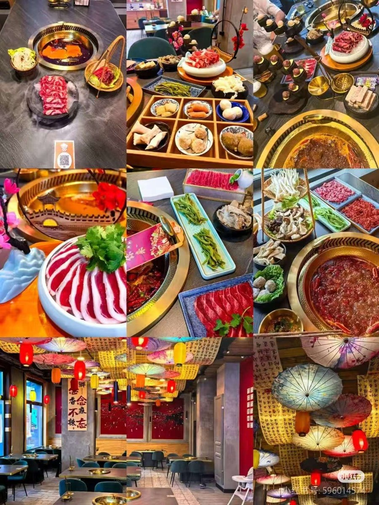
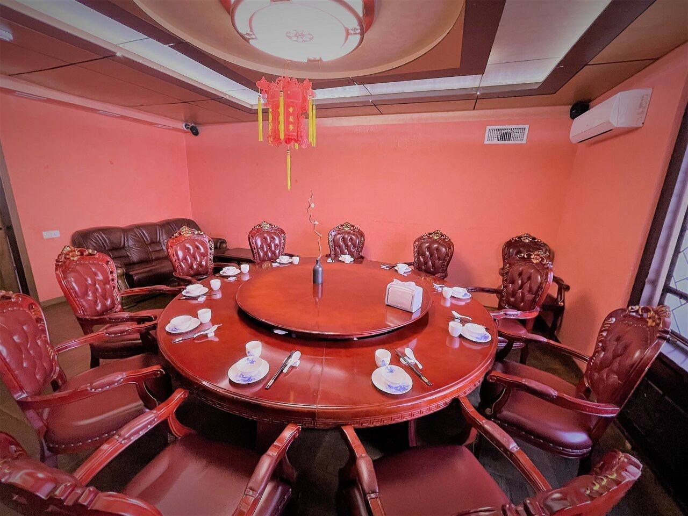
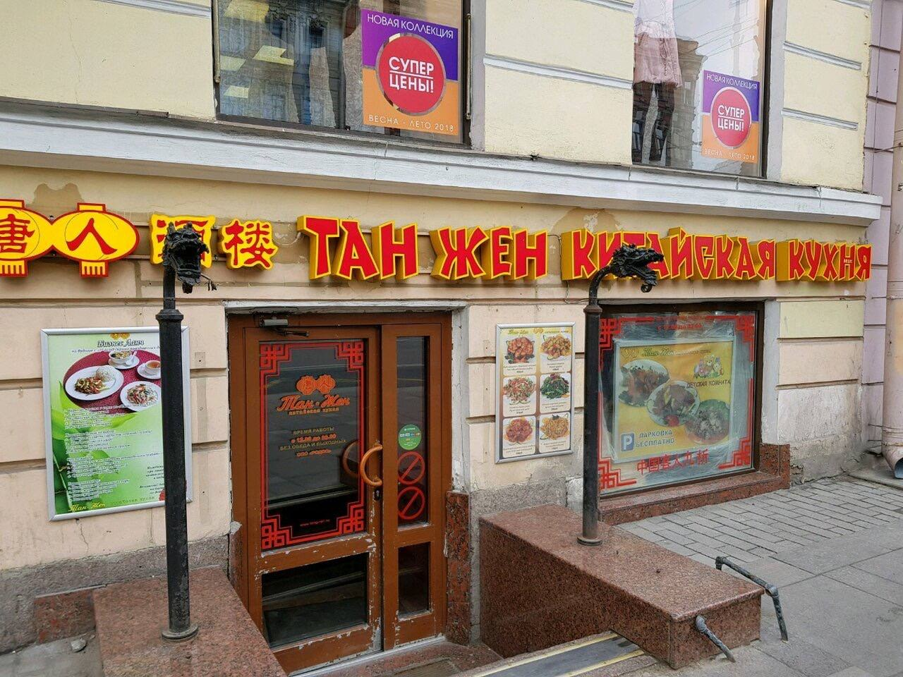
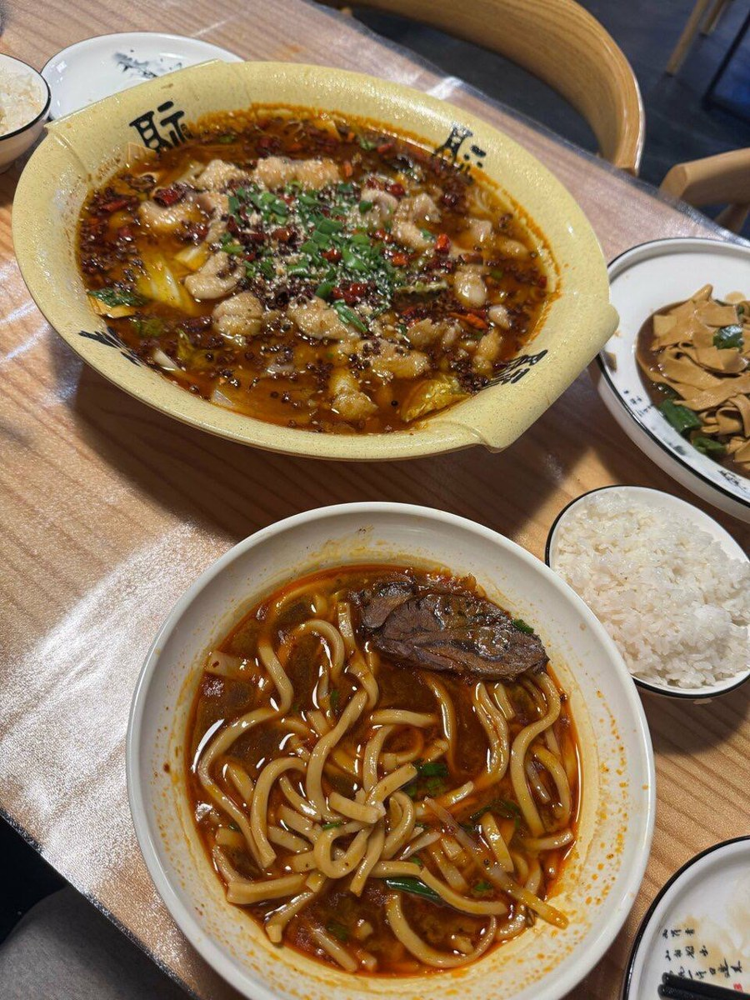
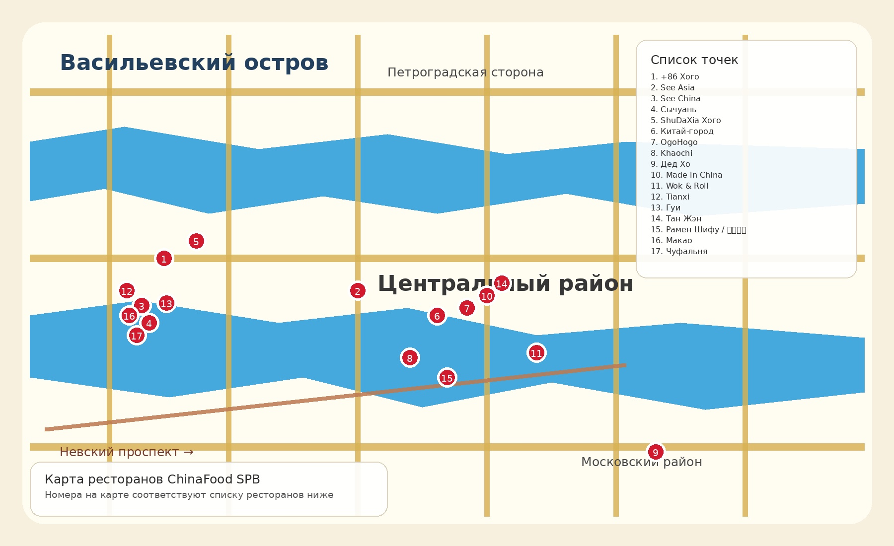

🔥 Хого
Горячий котёл для компании: мясо, овощи, лапша, острый и неострый бульон.
Для китайцев в Санкт-Петербурге
Выберите ресторан по реальным фотографиям, типу кухни, району, среднему чеку, отзывам и индексу рекомендации. Нажмите на название ресторана, чтобы открыть отдельную страницу с полной информацией.
Идея проекта
Китайским студентам, туристам и жителям Санкт-Петербурга часто сложно быстро понять, где есть настоящая китайская кухня, какой средний чек, какие блюда заказать и насколько ресторан подходит для компании.
На сайте есть поиск, фильтр по категориям, адреса, фотографии, рейтинг, комментарии и отдельная страница с полной информацией о каждом ресторане.
Категории

Горячий котёл для компании: мясо, овощи, лапша, острый и неострый бульон.

Острые блюда, перец, мапо тофу и насыщенный вкус.

Классические блюда, рис, лапша, супы, закуски и домашний формат.

Быстрый обед: лапша, рамен, рисовые блюда и небольшие кафе.
База ресторанов
Карта

Интерактивная карта работает при наличии интернета.
Отзывы